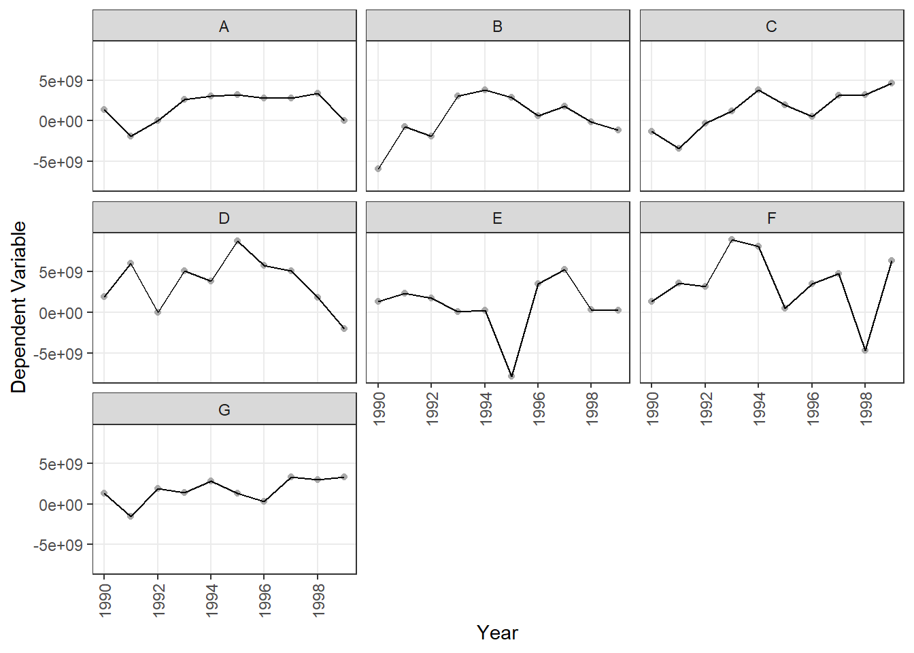
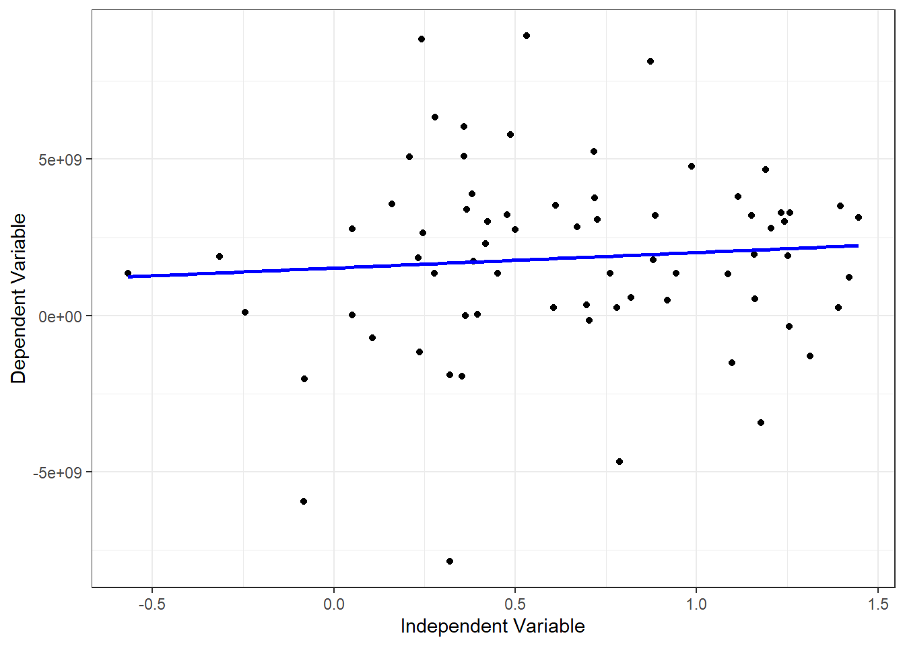
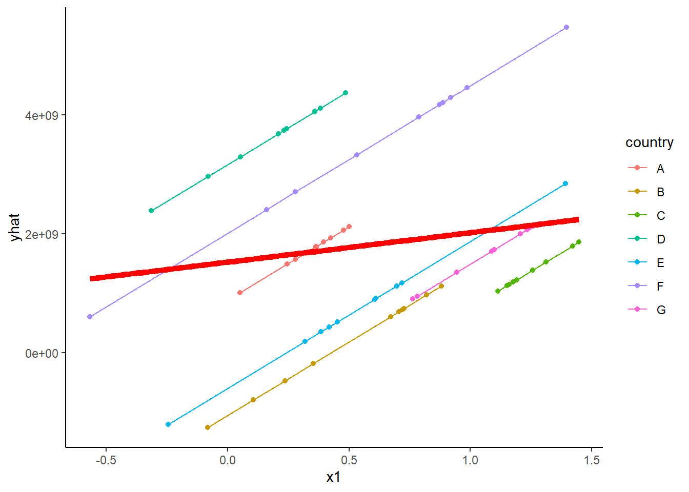

# New packages that need to be installed
install.packages("gplots") #for plotmeans() function
install.packages("plm") #for panel analysis# Load needed packages
library(openxlsx)
library(tidyverse)
library(gplots)
library(plm)# Read Data
pdata <- read.xlsx("Day 5 Data.xlsx", "Panel Data")ggplot(pdata, aes(x=year, y= y)) +
geom_point(color="darkgray", size=1.5)+
geom_line()+
scale_y_continuous(name="Dependent Variable")+
scale_x_continuous(name= "Year", breaks=seq(1990,1999,by=2))+
theme_bw()+
theme (panel.grid.minor = element_blank(), plot.title = element_text(hjust=0.5,size=12, face="bold"),
axis.text.x= element_text(size=9,angle = 90, vjust = 0.5, hjust=1))+
facet_wrap(vars(country))
ggplot(pdata, aes(x=year, y= y, color=country)) +
geom_point( size=1.5)+
geom_smooth(span = 1,method="loess",se=FALSE)+
scale_y_continuous(name="Dependent Variable")+
scale_x_continuous(name= "Year", breaks=seq(1990,1999,by=1))+
theme_bw()+
theme (panel.grid.minor = element_blank(), plot.title = element_text(hjust=0.5,size=12, face="bold"),
axis.text.x= element_text(size=9,angle = 90, vjust = 0.5, hjust=1))## `geom_smooth()` using formula 'y ~ x'plotmeans(y~country, main="Heterogeneity across countries", data=pdata)plotmeans(y~year, main="Heterogeneity across years", data=pdata)# Regular OLS does not consider heterogeneity across entities or time
ols <- lm(y~x1, data=pdata)
summary(ols)##
## Call:
## lm(formula = y ~ x1, data = pdata)
##
## Residuals:
## Min 1Q Median 3Q Max
## -9.546e+09 -1.578e+09 1.554e+08 1.422e+09 7.183e+09
##
## Coefficients:
## Estimate Std. Error t value Pr(>|t|)
## (Intercept) 1.524e+09 6.211e+08 2.454 0.0167 *
## x1 4.950e+08 7.789e+08 0.636 0.5272
## ---
## Signif. codes: 0 '***' 0.001 '**' 0.01 '*' 0.05 '.' 0.1 ' ' 1
##
## Residual standard error: 3.028e+09 on 68 degrees of freedom
## Multiple R-squared: 0.005905, Adjusted R-squared: -0.008714
## F-statistic: 0.4039 on 1 and 68 DF, p-value: 0.5272ggplot(pdata, aes(x=x1, y= y)) +
geom_point( size=1.5)+
geom_smooth(method = "lm", se = FALSE,color="blue")+
scale_y_continuous(name="Dependent Variable")+
scale_x_continuous(name= "Independent Variable")+
theme_bw()## `geom_smooth()` using formula 'y ~ x'
lsdv <- lm(y~x1 + country, data=pdata)
summary(lsdv)##
## Call:
## lm(formula = y ~ x1 + country, data = pdata)
##
## Residuals:
## Min 1Q Median 3Q Max
## -8.634e+09 -9.697e+08 5.405e+08 1.386e+09 5.612e+09
##
## Coefficients:
## Estimate Std. Error t value Pr(>|t|)
## (Intercept) 8.805e+08 9.618e+08 0.916 0.3635
## x1 2.476e+09 1.107e+09 2.237 0.0289 *
## countryB -1.938e+09 1.265e+09 -1.533 0.1304
## countryC -2.603e+09 1.596e+09 -1.631 0.1080
## countryD 2.282e+09 1.261e+09 1.810 0.0752 .
## countryE -1.483e+09 1.268e+09 -1.169 0.2467
## countryF 1.130e+09 1.289e+09 0.877 0.3839
## countryG -1.865e+09 1.497e+09 -1.246 0.2175
## ---
## Signif. codes: 0 '***' 0.001 '**' 0.01 '*' 0.05 '.' 0.1 ' ' 1
##
## Residual standard error: 2.796e+09 on 62 degrees of freedom
## Multiple R-squared: 0.2276, Adjusted R-squared: 0.1404
## F-statistic: 2.61 on 7 and 62 DF, p-value: 0.01991yhat <- lsdv$fitted.values
pdata$yhat <- yhat
ggplot(pdata)+
geom_point(aes(x=x1,y=yhat,color=country))+
geom_line(aes(x=x1,y=yhat,color=country))+
geom_smooth(aes(x=x1,y=y),method = lm, se = FALSE,
color="red",lwd=2)+
theme_classic()## `geom_smooth()` using formula 'y ~ x'
# Set panel dataframe
paneldf <- pdata.frame(pdata, index=c("country", "year"))fixed_model <- plm(y ~x1, data=paneldf,model="within")
summary(fixed_model)## Oneway (individual) effect Within Model
##
## Call:
## plm(formula = y ~ x1, data = paneldf, model = "within")
##
## Balanced Panel: n = 7, T = 10, N = 70
##
## Residuals:
## Min. 1st Qu. Median Mean 3rd Qu. Max.
## -8.63e+09 -9.70e+08 5.40e+08 0.00e+00 1.39e+09 5.61e+09
##
## Coefficients:
## Estimate Std. Error t-value Pr(>|t|)
## x1 2475617827 1106675594 2.237 0.02889 *
## ---
## Signif. codes: 0 '***' 0.001 '**' 0.01 '*' 0.05 '.' 0.1 ' ' 1
##
## Total Sum of Squares: 5.2364e+20
## Residual Sum of Squares: 4.8454e+20
## R-Squared: 0.074684
## Adj. R-Squared: -0.029788
## F-statistic: 5.00411 on 1 and 62 DF, p-value: 0.028892# The value of the coefficient indicates how much y changes overtime, on average per country, when x1 increases by 1 unit# Display the fixed effects (i.e. constants for each country)
fixef(fixed_model)## A B C D E F
## 880542404 -1057858363 -1722810755 3162826897 -602622000 2010731793
## G
## -984717493#Effect of country on y
summary(fixef(fixed_model,type="dmean"))## Estimate Std. Error t-value Pr(>|t|)
## A 639672049 961807052 0.6651 0.508470
## B -1298728718 1051067684 -1.2356 0.221258
## C -1963681109 1631513751 -1.2036 0.233322
## D 2921956543 909459150 3.2129 0.002086 **
## E -843492355 1064291684 -0.7925 0.431069
## F 1769861439 1122809097 1.5763 0.120051
## G -1225587848 1492723118 -0.8210 0.414768
## ---
## Signif. codes: 0 '***' 0.001 '**' 0.01 '*' 0.05 '.' 0.1 ' ' 1# Testing for fixed effects (Ho: OLS better than fixed)
pFtest(fixed_model,ols)##
## F test for individual effects
##
## data: y ~ x1
## F = 2.9655, df1 = 6, df2 = 62, p-value = 0.01307
## alternative hypothesis: significant effects# if p-value is <0.05, then fixed effects is better than OLSrandom_model <- plm(y ~x1, data=paneldf,model="random")
summary(random_model)## Oneway (individual) effect Random Effect Model
## (Swamy-Arora's transformation)
##
## Call:
## plm(formula = y ~ x1, data = paneldf, model = "random")
##
## Balanced Panel: n = 7, T = 10, N = 70
##
## Effects:
## var std.dev share
## idiosyncratic 7.815e+18 2.796e+09 0.873
## individual 1.133e+18 1.065e+09 0.127
## theta: 0.3611
##
## Residuals:
## Min. 1st Qu. Median Mean 3rd Qu. Max.
## -8.94e+09 -1.51e+09 2.82e+08 0.00e+00 1.56e+09 6.63e+09
##
## Coefficients:
## Estimate Std. Error z-value Pr(>|z|)
## (Intercept) 1037014284 790626206 1.3116 0.1896
## x1 1247001782 902145601 1.3823 0.1669
##
## Total Sum of Squares: 5.6595e+20
## Residual Sum of Squares: 5.5048e+20
## R-Squared: 0.02733
## Adj. R-Squared: 0.013026
## Chisq: 1.91065 on 1 DF, p-value: 0.16689# The coefficient of X indicates the average effect of X over Y when X changes by
# 1 unit across time and between countries# Hausman Test
#Ho: random effects preferred
#H1: fixed effects preferred
phtest(fixed_model,random_model)##
## Hausman Test
##
## data: y ~ x1
## chisq = 3.674, df = 1, p-value = 0.05527
## alternative hypothesis: one model is inconsistent